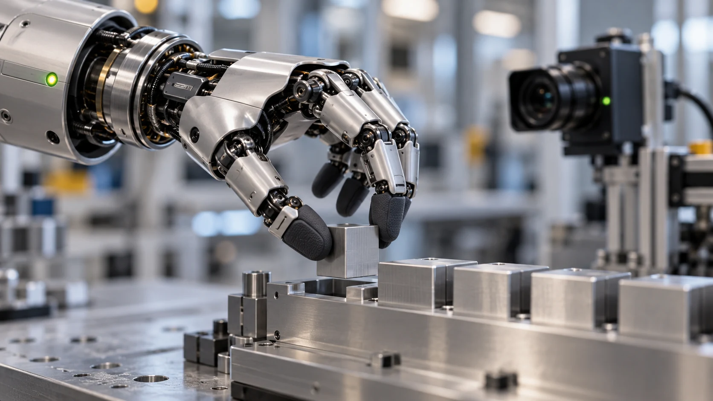

Ask what happened across repeated attempts, including setup, intervention, and recovery.
A well-produced robot demonstration can reveal an interesting mechanism or behavior. It is an invitation to investigate, not a complete description of operational performance. The next step is to ask what conditions made the result possible and whether those conditions resemble the application you have in mind.
Identify what the demonstration actually shows
Describe the visible action without adding assumptions about how it was controlled. Note the environment, objects, starting positions, and apparent human involvement. If the control method or editing is not explained, keep those points open instead of treating a smooth sequence as evidence of a broader capability.
Ask for repeated attempts
A repeatable task includes variation. Request a trial that changes object positions or other conditions relevant to your use case. Record both completed attempts and unsuccessful ones. A result becomes more interpretable when the evaluation includes the cases where the system needs help.
Include the time outside the action
Setup, calibration, reset, and recovery are part of the workflow. A short successful action may depend on preparation that matters in real operation. Ask who performs that work and how often it is required. Those questions help translate a demonstration into an application plan.

Use the evidence for the right decision
An early demonstration may justify a technical discussion or a small trial. It may not yet justify a fleet rollout. Match the size of the next commitment to the strength of the available evidence. That approach lets a team stay open to promising technology while making its assumptions visible.
Turn the video into a testable statement
Begin by writing one sentence that describes the visible result: a particular robot moved a particular object between two locations under the shown conditions. Then create a separate list of unanswered questions. These might include whether the starting pose was fixed, whether an operator selected the object, and how often the attempt had been repeated. Keeping observation and interpretation separate helps a team discuss an impressive demonstration without either dismissing it or assigning unsupported capabilities to it.
Use the statement to propose a small follow-up experiment. If the useful question concerns object recognition, vary the object presentation. If it concerns placement, keep the object constant and vary the destination within the intended task area. Changing everything at once makes it harder to understand what a successful or unsuccessful result means. A good follow-up isolates the uncertainty that matters to the project.
Agree on attempt boundaries
A repeated trial needs an agreed beginning and end. Does an attempt start when an operator places the object, when the robot receives a command, or when the robot begins searching? Does it end at release, at verification, or after the scene is ready for the next task? Write those boundaries down. They determine whether setup and recovery are included in the result and make comparisons between sessions more meaningful.
Give every attempt a row in the record. Include abandoned attempts and cases where a person intervenes before motion begins. If an observation cannot be classified, preserve a short note rather than forcing it into the nearest success category. A transparent small dataset is easier to learn from than a larger collection whose definitions change whenever the system encounters an awkward case.
Preserve the ordinary runs
Keep a representative selection of complete runs alongside the highlight clip. A routine success shows what the normal process looks like. A recoverable miss shows the work needed to resume. An unresolved attempt shows the current boundary of the application. Together, these examples help colleagues interpret the outcome table and identify which part of the workflow deserves attention next. They also make supplier discussions more specific.
End the evaluation with a proportional next step. A promising first demonstration may justify access to documentation or a controlled trial. A repeated task with recorded interventions may justify a more realistic pilot. Each stage should answer a new question before the project expands. This approach gives new technology room to prove useful while keeping commitments tied to evidence. It also makes progress visible when the improvement is better recovery or clearer setup rather than a more spectacular action.
Your next step.
- Describe only what is demonstrated.
- Ask about control method and preparation.
- Record repeated outcomes and recovery work.
Sources & further reading
Primary sources and manufacturer documentation for the examples and further investigation. Recommendations in this article are HUMANOID’s editorial guidance.
Toyota: humanoid robotics research ↗Pollen Robotics: research and teleoperation resources ↗Originally prepared and references reviewed: 24 October 2026. Expanded with practical guidance and original illustrations: 25 October 2026. Editorial archive date: 11 May 2026. This is original editorial content, not a record of a historical product launch, independent test, or purchase.